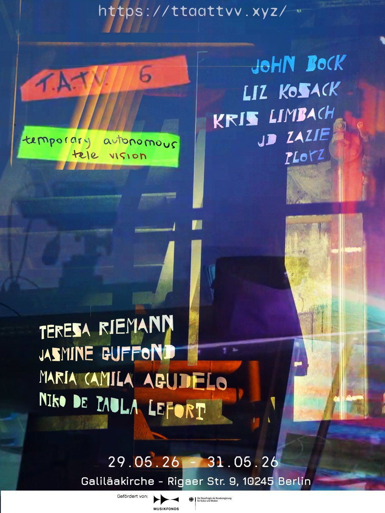

T.A.T.V.
Temporary Autonomous Tele Vision treats television as an experimental format built around live sound and image. Six editions since 2020, funded by Musikfonds and Initiative Neue Musik Berlin. T.A.T.V. #6 took place in the Galiläakirche, Berlin, from 29 to 31 May 2026, with John Bock, Ployz, Teresa Riemann, Jasmin Guffond, JD Zazie, Maria Camila Agudelo, Liz Kosack and Niko de Paula Lefort, and an evening in memory of Hopek Quirin.
